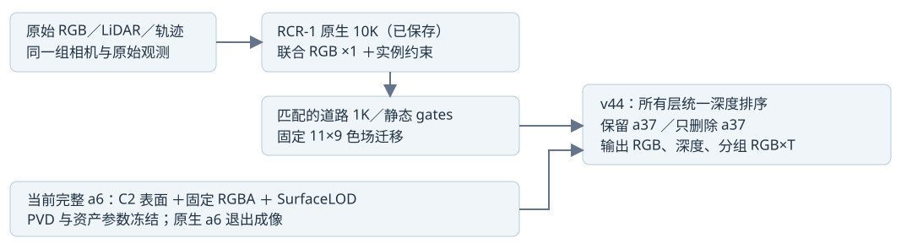
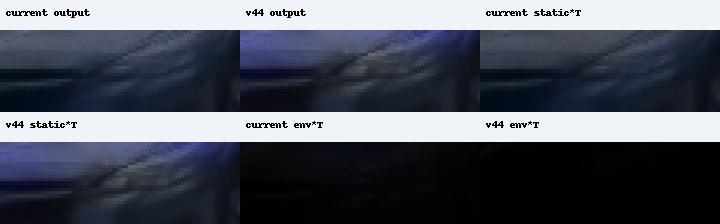
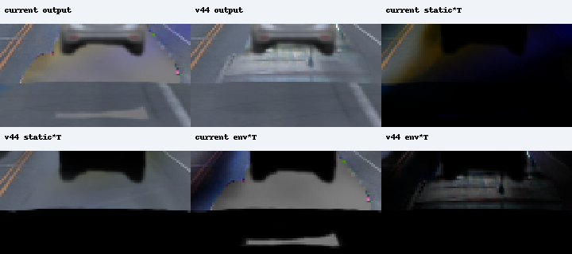
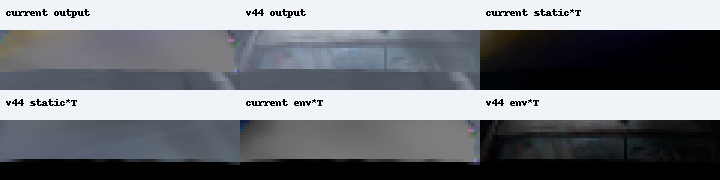
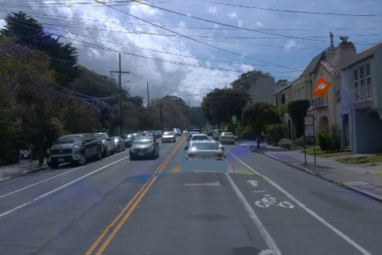
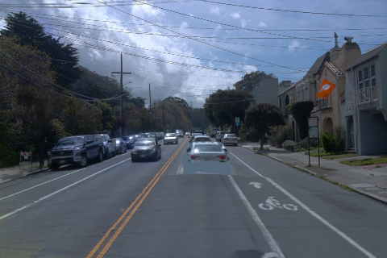
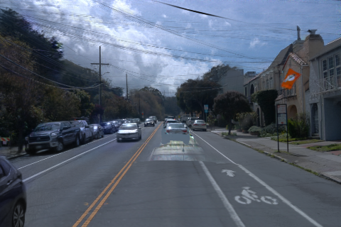

current：当前车体＋旧背景

本页只有 raw105／113／130／137 四帧 pilot，不是完整49帧。
PASS_FROZEN_NATIVE_SHARED_SORT_FOUR_FRAME_PILOT。尚未给出人工画质接受结论。
四帧工程检查通过，道路去蓝明显；用户随后将银残片列为延期问题，因此继续了独立full49运行。四帧本身不当作49帧结论。
engine pass ≠ human 画质接受。资产冻结与 RGB 指标接近只描述车体输入及特定评价域，不等于全景无回退。视觉审查需覆盖银亮片、其他车辆、天空和非目标区域。
审查角色：Codex root agent visual inspection; not a user acceptance verdict；agent assessment：PILOT_ENGINEERING_PASS_SILVER_DEFERRED_BY_USER；human verdict：null。
原先暂缓判断保存在visual_review.json；用户更新范围后继续full49，主结果见完整49帧页。
RCR-1 原生10K与匹配道路1K／gates作为已保存组件接入；原11×9世界色场是 frozen-transfer，未重标定。本轮无 native／road／asset 训练、无PVD更新。HELD属于内部开发域，没有独立隐藏GT，也不作独立泛化声明。AutoDL 按用户要求保持开机；发布器不管理电源。
current 与 v44 使用同一冻结车体、同一帧相机与轨迹。保留／删除仅开关 a37。原始实拍列仍有 a37，不能当删除后的隐藏道路真值。初始 raw113 的真实图片直接写在 src 中，无 JavaScript 也可见。
当前显示：raw113 / delete a37 / 全景 480×320 / 含原始实拍列
静态初始 raw113 已写入真实图片 src；切换需要 JavaScript。整组图片预解码成功后才同步更新。


全景 480×320。所有列均为本次实际结果 PNG；可打开原尺寸查看。
原始RGB／LiDAR／轨迹提供固定观测和评价域；当前车体与RCR-1背景在同一次native Gaussian排序中成像。删除只移除a37，所有其余层保留。

以下误差使用固定原始观测掩码，以浮点误差 sum / 像素 count 汇总。Δ 为 v44−current，正值表示该项误差增加；不能用平均改善覆盖局部回退。深度为同次排序后 alpha 归一化深度，背景改动仍可改变它。
| 状态 | 域 | 指标（越低越好） | 帧 | 像素数 | current | v44 | Δ v44−current |
|---|---|---|---|---|---|---|---|
| keep | 本次全部帧 | a6 RGB MAE | 4 | 2,760 | 0.051790 | 0.051832 | +0.000042 |
| keep | 本次全部帧 | a6 深度 MAE (m) | 4 | 663 | 0.131915 | 0.140606 | +0.008691 |
| keep | 本次全部帧 | 道路 RGB MAE | 4 | 93,464 | 0.030794 | 0.017569 | -0.013225 |
| keep | 本次全部帧 | a37 RGB MAE | 4 | 36,995 | 0.018413 | 0.017767 | -0.000646 |
| keep | 本次全部帧 | protected RGB MAE | 4 | 520,738 | 0.023328 | 0.016708 | -0.006620 |
| keep | HELD9 · 内部开发 | a6 RGB MAE | 4 | 2,760 | 0.051790 | 0.051832 | +0.000042 |
| keep | HELD9 · 内部开发 | a6 深度 MAE (m) | 4 | 663 | 0.131915 | 0.140606 | +0.008691 |
| keep | HELD9 · 内部开发 | 道路 RGB MAE | 4 | 93,464 | 0.030794 | 0.017569 | -0.013225 |
| keep | HELD9 · 内部开发 | a37 RGB MAE | 4 | 36,995 | 0.018413 | 0.017767 | -0.000646 |
| keep | HELD9 · 内部开发 | protected RGB MAE | 4 | 520,738 | 0.023328 | 0.016708 | -0.006620 |
| delete | 本次全部帧 | a6 RGB MAE | 4 | 2,760 | 0.051743 | 0.051799 | +0.000056 |
| delete | 本次全部帧 | a6 深度 MAE (m) | 4 | 663 | 0.130632 | 0.135330 | +0.004698 |
| delete | 本次全部帧 | 道路 RGB MAE | 4 | 19,956 | 0.016532 | 0.009478 | -0.007054 |
| delete | 本次全部帧 | protected RGB MAE | 4 | 520,738 | 0.020692 | 0.016818 | -0.003874 |
| delete | HELD9 · 内部开发 | a6 RGB MAE | 4 | 2,760 | 0.051743 | 0.051799 | +0.000056 |
| delete | HELD9 · 内部开发 | a6 深度 MAE (m) | 4 | 663 | 0.130632 | 0.135330 | +0.004698 |
| delete | HELD9 · 内部开发 | 道路 RGB MAE | 4 | 19,956 | 0.016532 | 0.009478 | -0.007054 |
| delete | HELD9 · 内部开发 | protected RGB MAE | 4 | 520,738 | 0.020692 | 0.016818 | -0.003874 |
HELD9 已参与内部开发，不是独立泛化测试。本次四个 pilot raw 全属于 HELD9 时，ALL 与 HELD 行相同，也不代表覆盖全部九帧或49帧。delete 道路 target 是跨时刻重观测 proxy；始终被遮挡区域没有独立隐藏 GT。
| 状态 | 指标 | 误差增加帧数 | 误差增加帧 | 最大逐帧 Δ |
|---|---|---|---|---|
| keep | a6 RGB MAE | 1 / 4 | raw137 | raw137: +0.000683 |
| keep | a6 深度 MAE (m) | 3 / 4 | raw105, raw113, raw130 | raw130: +0.016528 |
| keep | 道路 RGB MAE | 0 / 4 | 无正增量 | raw130: -0.011326 |
| keep | a37 RGB MAE | 0 / 4 | 无正增量 | raw113: -0.000159 |
| keep | protected RGB MAE | 0 / 4 | 无正增量 | raw130: -0.004107 |
| delete | a6 RGB MAE | 1 / 4 | raw137 | raw137: +0.000538 |
| delete | a6 深度 MAE (m) | 2 / 4 | raw105, raw113 | raw105: +0.013202 |
| delete | 道路 RGB MAE | 0 / 4 | 无正增量 | raw113: -0.003381 |
| delete | protected RGB MAE | 0 / 4 | 无正增量 | raw113: -0.002913 |
| 帧 | 状态 | a6 RGB | a6 深度 (m) | 道路 RGB | a37 RGB | protected RGB | 非目标区版本间变化：均值 / 最大值 | 原始 metrics |
|---|---|---|---|---|---|---|---|---|
| raw105 | keep | 0.053334 → 0.053292 Δ -0.000042 n=1,042 | 0.164483 → 0.179342 Δ +0.014859 n=228 | 0.035078 → 0.018258 Δ -0.016819 n=17,483 | 0.012217 → 0.011992 Δ -0.000224 n=14,296 | 0.025000 → 0.015709 Δ -0.009291 n=128,195 | 0.015578 / 0.511350 最大通道变化>0.02: 39,725 / 120,126 | current / v44 |
| raw105 | delete | 0.053311 → 0.053293 Δ -0.000018 n=1,042 | 0.164390 → 0.177592 Δ +0.013202 n=228 | 0.020457 → 0.010237 Δ -0.010220 n=7,284 | — | 0.021245 → 0.015912 Δ -0.005333 n=128,195 | 0.015549 / 0.511350 最大通道变化>0.02: 39,692 / 120,126 | current / v44 |
| raw113 | keep | 0.048921 → 0.048913 Δ -0.000008 n=879 | 0.144447 → 0.148599 Δ +0.004152 n=226 | 0.028525 → 0.013585 Δ -0.014940 n=22,083 | 0.017065 → 0.016906 Δ -0.000159 n=12,430 | 0.021858 → 0.013717 Δ -0.008141 n=128,429 | 0.013573 / 0.421411 最大通道变化>0.02: 40,858 / 121,682 | current / v44 |
| raw113 | delete | 0.048897 → 0.048876 Δ -0.000022 n=879 | 0.144056 → 0.148433 Δ +0.004377 n=226 | 0.012779 → 0.009398 Δ -0.003381 n=7,070 | — | 0.016883 → 0.013971 Δ -0.002913 n=128,429 | 0.013552 / 0.421411 最大通道变化>0.02: 40,798 / 121,682 | current / v44 |
| raw130 | keep | 0.048672 → 0.048461 Δ -0.000211 n=455 | 0.087557 → 0.104085 Δ +0.016528 n=115 | 0.034235 → 0.022909 Δ -0.011326 n=24,850 | 0.027295 → 0.024300 Δ -0.002995 n=5,820 | 0.021995 → 0.017889 Δ -0.004107 n=128,752 | 0.019031 / 0.757738 最大通道变化>0.02: 51,386 / 125,902 | current / v44 |
| raw130 | delete | 0.048476 → 0.048443 Δ -0.000033 n=455 | 0.080406 → 0.078323 Δ -0.002084 n=115 | 0.013166 → 0.008608 Δ -0.004558 n=3,613 | — | 0.021130 → 0.017887 Δ -0.003243 n=128,752 | 0.019020 / 0.757738 最大通道变化>0.02: 51,359 / 125,902 | current / v44 |
| raw137 | keep | 0.057865 → 0.058548 Δ +0.000683 n=384 | 0.077058 → 0.072111 Δ -0.004947 n=94 | 0.026998 → 0.015616 Δ -0.011382 n=29,048 | 0.030470 → 0.030178 Δ -0.000292 n=4,449 | 0.024407 → 0.019367 Δ -0.005039 n=135,362 | 0.019748 / 0.859425 最大通道变化>0.02: 56,478 / 133,302 | current / v44 |
| raw137 | delete | 0.057873 → 0.058411 Δ +0.000538 n=384 | 0.077920 → 0.071060 Δ -0.006859 n=94 | 0.021614 → 0.008566 Δ -0.013048 n=1,989 | — | 0.023367 → 0.019362 Δ -0.004005 n=135,362 | 0.019700 / 0.859425 最大通道变化>0.02: 56,397 / 133,302 | current / v44 |
“非目标区版本间变化”衡量两版本差异，使用 protect 减两车 reviewed／候选框；它不是该区域准确率，不能单独判断变化更好或更坏。保护域与道路域的 pooled 改善不证明其他车辆局部颜色没有回退。
蓝残差为 B−(R+G)/2，相对重观测道路 proxy。矩形内再与原始 road_edit、ground proxy 相交并排除 a6／a37；不会为得到数值而扩大或改换原分母。n=0 时均值保持 null／“—”，不得写成误差为0或去蓝成功。
| 帧 | 状态 | [x0,y0,x1,y1) | 有效像素 n | current 绝对蓝残差 | v44 绝对蓝残差 | Δ | 正蓝残差>0.05 像素 | 域状态 |
|---|---|---|---|---|---|---|---|---|
| raw113 | keep | [276, 175, 309, 220] | 0 | — | — | — | 0 → 0 | 空域／不可评价 |
| raw113 | delete | [276, 175, 309, 220] | 0 | — | — | — | 0 → 0 | 空域／不可评价 |
| raw137 | keep | [276, 175, 309, 220] | 0 | — | — | — | 0 → 0 | 空域／不可评价 |
| raw137 | delete | [276, 175, 309, 220] | 0 | — | — | — | 0 → 0 | 空域／不可评价 |
以下补充统计从已保存float结果复算，target是原始可见RGB；保留原蓝道路域n=0。固定可见背景域排除原观测车辆；共同C2排除域再要求两端asset α×T≤0.01，其分母带预测条件，不能当作原合同固定域，也不是隐藏删车GT。
| 来源 | 帧 | 状态 | 独立命名的域 | 像素数 | RGB MAE current→v44 | 绝对蓝误差 current→v44 | 正蓝误差>0.05 像素 |
|---|---|---|---|---|---|---|---|
| pilot | raw113 | keep | 原始固定可见背景 | 906 | 0.137236 → 0.013125 | 0.023416 → 0.005307 | 44 → 0 |
| pilot | raw113 | keep | 共同C2排除（预测条件域） | 788 | 0.142317 → 0.008728 | 0.023335 → 0.003575 | 39 → 0 |
| pilot | raw113 | delete | 原始固定可见背景 | 906 | 0.043433 → 0.014814 | 0.078101 → 0.006419 | 475 → 0 |
| pilot | raw113 | delete | 共同C2排除（预测条件域） | 782 | 0.040876 → 0.008674 | 0.084452 → 0.003921 | 450 → 0 |
| pilot | raw137 | keep | 原始固定可见背景 | 1,329 | 0.079216 → 0.010452 | 0.033899 → 0.004579 | 232 → 0 |
| pilot | raw137 | keep | 共同C2排除（预测条件域） | 1,329 | 0.079216 → 0.010452 | 0.033899 → 0.004579 | 232 → 0 |
| pilot | raw137 | delete | 原始固定可见背景 | 1,329 | 0.041894 → 0.010096 | 0.074090 → 0.004888 | 664 → 0 |
| pilot | raw137 | delete | 共同C2排除（预测条件域） | 1,329 | 0.041894 → 0.010096 | 0.074090 → 0.004888 | 664 → 0 |
| 来源 | 帧 | 状态 | 事后矩形 | 像素数 | RGB MAE current→v44 | 绝对蓝误差 current→v44 | 正蓝误差>0.05 像素 |
|---|---|---|---|---|---|---|---|
| pilot | raw105 | keep | [18, 237, 91, 262] | 1,825 | 0.061097 → 0.053446 | 0.053091 → 0.048625 | 105 → 172 |
| pilot | raw105 | delete | [18, 237, 91, 262] | 1,825 | 0.061097 → 0.053446 | 0.053091 → 0.048625 | 105 → 172 |
hood矩形由目视后指定，可能混入车体及非车像素，不是整车mask或正式接受门槛。该蓝色车辆的矩形RGB／平均蓝误差可以改善，同时正蓝误差>0.05的尾部像素增加；不能把局部色感或尾部增多写成整车平均误差回退。
按用户最新范围，本轮先解决蓝紫斑；银残片仍在，保留诊断，未宣称已修复。
按用户最新范围，本轮先解决蓝紫斑；银色残片保留到下一轮，以下诊断不作为继续49帧的门槛，也不宣称已修复。
整个预登记矩形作为分母；不按预测亮度挑亮点。亮度增加或减少本身都不是修复准确率：此处没有独立删车后的隐藏道路真值，也不沿用历史315亮点作为新版本分母。
| 帧 | 状态 | 完整 ROI | 像素数 | current 亮度均值 | v44 亮度均值 | 亮度 Δ（非误差） | current α×T：asset/a37/road/static | v44 α×T：asset/a37/road/static |
|---|---|---|---|---|---|---|---|---|
| raw130 | keep | [202, 192, 298, 244] | 4,992 | 0.367677 | 0.378188 | +0.010511 | 0.000186 / 0.986440 / 0.002990 / 0.008366 | 0.000216 / 0.952337 / 0.006909 / 0.038900 |
| raw130 | delete | [202, 192, 298, 244] | 4,992 | 0.399210 | 0.406779 | +0.007569 | 0.107969 / 0.000000 / 0.401328 / 0.166979 | 0.104558 / 0.000000 / 0.430031 / 0.418944 |
| raw137 | keep | [210, 213, 290, 233] | 1,600 | 0.262847 | 0.265944 | +0.003097 | 0.000000 / 0.999898 / 0.000000 / 0.000000 | 0.000000 / 0.999898 / 0.000000 / 0.000000 |
| raw137 | delete | [210, 213, 290, 233] | 1,600 | 0.430515 | 0.450330 | +0.019815 | 0.000000 / 0.000000 / 0.323940 / 0.090502 | 0.000000 / 0.000000 / 0.326104 / 0.594055 |
| 帧 | 状态 | v44 实际分组 | ROI均值 R / G / B × T | 三通道均值 | 像素RGB重构最大误差 |
|---|---|---|---|---|---|
| raw130 | delete | asset | 0.034927 / 0.035569 / 0.037356 | 0.035951 | 0.000000715 |
| raw130 | delete | a37 | 0.000000 / 0.000000 / 0.000000 | 0.000000 | 0.000000715 |
| raw130 | delete | road | 0.141653 / 0.153678 / 0.172393 | 0.155908 | 0.000000715 |
| raw130 | delete | native_static | 0.158822 / 0.170155 / 0.184648 | 0.171208 | 0.000000715 |
| raw130 | delete | environment × T | 0.041048 / 0.043017 / 0.047071 | 0.043712 | 0.000000715 |
| raw137 | delete | asset | 0.000000 / 0.000000 / 0.000000 | 0.000000 | 0.000000715 |
| raw137 | delete | a37 | 0.000000 / 0.000000 / 0.000000 | 0.000000 | 0.000000715 |
| raw137 | delete | road | 0.105456 / 0.114644 / 0.128613 | 0.116238 | 0.000000715 |
| raw137 | delete | native_static | 0.233687 / 0.254256 / 0.286083 | 0.258009 | 0.000000715 |
| raw137 | delete | environment × T | 0.071961 / 0.076186 / 0.080102 | 0.076083 | 0.000000715 |
以上为v44绝对贡献。本节主运行current receipt只含group alpha×T；下方另列的三次真实forward重放补齐了指定ROI的current分组RGB，可在其已核对范围内比较层贡献。 不把“v44 static贡献大”直接写成“static导致净增亮”；α×T不能替代真实RGB×T。keep状态没有额外保存actual group RGB，缺失项不补0。
针对pilot的delete a37指定ROI额外3次真实native forward，耗时2.724秒；无训练、无参数改动。state依据已归档diagnose_pilot_layers.py中固定delete=True及delete_float对齐检查。current重放RGB与已保存pilot结果逐像素一致后，才与v44同排序贡献比较。只覆盖raw105 hood与raw130／137完整银ROI；该附加pilot诊断不扩大为49帧分层证据，也不扩展成全景因果结论。
| 帧 | 层 | current RGB×T | v44 RGB×T | Δ RGB×T | Δ 三通道均值 |
|---|---|---|---|---|---|
| raw105 | asset | 0.000000 / 0.000000 / 0.000000 | 0.000000 / 0.000000 / 0.000000 | +0.000000 / +0.000000 / +0.000000 | +0.000000 |
| raw105 | a37 | 0.000000 / 0.000000 / 0.000000 | 0.000000 / 0.000000 / 0.000000 | +0.000000 / +0.000000 / +0.000000 | +0.000000 |
| raw105 | road | 0.000000 / 0.000000 / 0.000000 | 0.000000 / 0.000000 / 0.000000 | +0.000000 / +0.000000 / +0.000000 | +0.000000 |
| raw105 | native_static | 0.128930 / 0.160463 / 0.218746 | 0.162619 / 0.183175 / 0.265275 | +0.033689 / +0.022712 / +0.046529 | +0.034310 |
| raw105 | env_rgb_T | 0.019048 / 0.020865 / 0.029664 | 0.002553 / 0.002820 / 0.003173 | -0.016495 / -0.018045 / -0.026491 | -0.020344 |
| raw105 | constant_background_rgb_T | 0.000000 / 0.000000 / 0.000000 | 0.000000 / 0.000000 / 0.000000 | +0.000000 / +0.000000 / +0.000000 | +0.000000 |
| raw130 | asset | 0.035520 / 0.036173 / 0.037983 | 0.034927 / 0.035569 / 0.037356 | -0.000594 / -0.000604 / -0.000627 | -0.000608 |
| raw130 | a37 | 0.000000 / 0.000000 / 0.000000 | 0.000000 / 0.000000 / 0.000000 | +0.000000 / +0.000000 / +0.000000 | +0.000000 |
| raw130 | road | 0.131915 / 0.142714 / 0.159362 | 0.141653 / 0.153678 / 0.172393 | +0.009738 / +0.010963 / +0.013030 | +0.011244 |
| raw130 | native_static | 0.044225 / 0.042726 / 0.050439 | 0.158822 / 0.170155 / 0.184648 | +0.114597 / +0.127430 / +0.134209 | +0.125412 |
| raw130 | env_rgb_T | 0.164587 / 0.168418 / 0.183566 | 0.041048 / 0.043017 / 0.047071 | -0.123539 / -0.125400 / -0.136495 | -0.128478 |
| raw130 | constant_background_rgb_T | 0.000000 / 0.000000 / 0.000000 | 0.000000 / 0.000000 / 0.000000 | +0.000000 / +0.000000 / +0.000000 | +0.000000 |
| raw137 | asset | 0.000000 / 0.000000 / 0.000000 | 0.000000 / 0.000000 / 0.000000 | +0.000000 / +0.000000 / +0.000000 | +0.000000 |
| raw137 | a37 | 0.000000 / 0.000000 / 0.000000 | 0.000000 / 0.000000 / 0.000000 | +0.000000 / +0.000000 / +0.000000 | +0.000000 |
| raw137 | road | 0.105022 / 0.113577 / 0.126658 | 0.105456 / 0.114644 / 0.128613 | +0.000434 / +0.001067 / +0.001955 | +0.001152 |
| raw137 | native_static | 0.021721 / 0.018964 / 0.029956 | 0.233687 / 0.254256 / 0.286083 | +0.211966 / +0.235292 / +0.256127 | +0.234462 |
| raw137 | env_rgb_T | 0.290757 / 0.291520 / 0.293368 | 0.071961 / 0.076186 / 0.080102 | -0.218796 / -0.215334 / -0.213266 | -0.215799 |
| raw137 | constant_background_rgb_T | 0.000000 / 0.000000 / 0.000000 | 0.000000 / 0.000000 / 0.000000 | +0.000000 / +0.000000 / +0.000000 | +0.000000 |
各层RGB×T差值可相加重构输出差值；environment×T同时受环境RGB与透过率影响，未把二者拆开。该记录描述成像贡献变化，不证明训练伪影的根因。银残片留下一轮处理。



| 阶段 | 版本 | 模式 | 帧 | 实际秒数 | α×T守恒最大误差 | 原始receipt |
|---|---|---|---|---|---|---|
| 本页主结果 | current | pilot | 4 | 12.280 | 0.000001132 | RENDERED_NOT_HUMAN_ACCEPTED |
| 本页主结果 | v44 | pilot | 4 | 10.940 | 0.000001192 | RENDERED_NOT_HUMAN_ACCEPTED |
pilot 与正式结果分别记账。每个版本 receipt 的 neural／geometry／colour-fit／native-or-road training updates 均为0；这是已保存组件的配对渲染，不是新的训练实验。
| 冻结项 | current | v44 |
|---|---|---|
| canonical asset SHA256 | 0b1f69e13d0e54328734325c8f118bc27dc7b75080869f2d52f55038afc0b20d | 0b1f69e13d0e54328734325c8f118bc27dc7b75080869f2d52f55038afc0b20d |
| posterior SHA256 | b98a0d932730fbf1462e555eb7d5eb931030b51fe68848990f073b9752879e06 | b98a0d932730fbf1462e555eb7d5eb931030b51fe68848990f073b9752879e06 |
| persistent S/F SHA256 | cda8991f7fd02e5feccc55f193553fe912761d450b28ee556b4a0da9d4193b50 | cda8991f7fd02e5feccc55f193553fe912761d450b28ee556b4a0da9d4193b50 |
| rasterizer kernel SHA256 | 0eaff4d7a9b8ef6e711627f4c19824bf427c4387f7c6453fcb769a2c919c920e | 0eaff4d7a9b8ef6e711627f4c19824bf427c4387f7c6453fcb769a2c919c920e |
原始comparison（pooled＋逐帧） · 交付清单与哈希 · 本报告发布器 · CPU阶段原报告与历史证据 · 成对渲染入口 · 输入契约
最终HTML包只复制真实PNG、JSON指标／收据和报告代码，不复制大float NPZ。完整float与components保留在原结果目录，报告中的RGB分组数字来自原metrics，不由PNG反推。
以下是旧M2的历史配对，只说明RCR-1组件的来源；不能冒充当前车体上的v44结果或复用其历史评价分母。历史银亮片诊断与先前暗团归因保留在CPU阶段报告。



